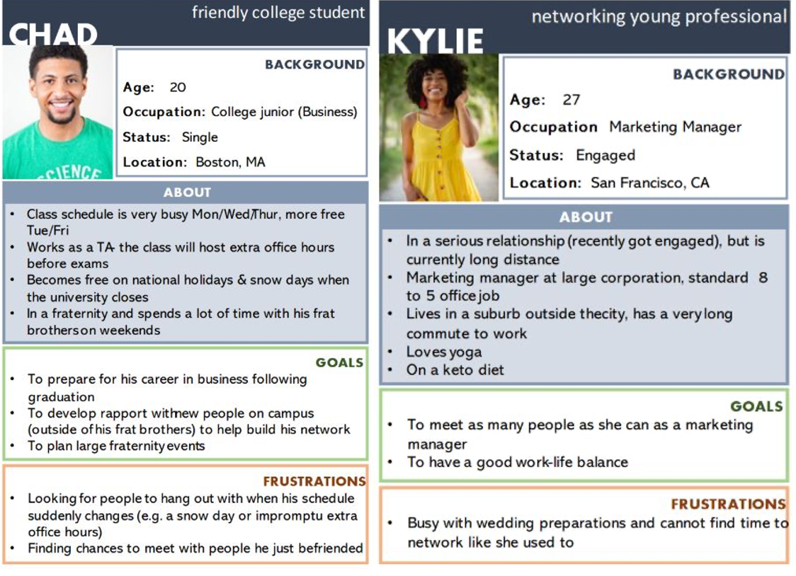

Task Analysis
From left to right:
- Trying to find a time to catch up with a specific friend who is also busy
- Planning a group event with multiple people
- Wanting to turn a regular lunch break/free time into a more social event

You In? is an app that aims to make it easier for friends to plan meetups.
Basically, it works by:
A team of 4 throughout a human-computer interaction (HCI) course
HCI + Mobile Application Development (NativeScript+Vue)
It’s difficult to find time to get together with friends. The issue is exacerbated by highly variable schedules and the inability to easily communicate one's free time to each of one's friends.
Research in the field of shared calendars has mostly been restricted to calendars shared within families or workplaces, instead of friendships. Bødker and Grönvall summarize the three core uses of family calendars:
Our project will primarily focus on the third use (awareness). We want to make it easy for users to see when their friends are available and to easily find time to meet. The secondary purpose of our project would be the first use (coordination and negotiation). Following awareness of available times to meet, we would like our users to be able to decide what to do during that time. Our project will splinter from the second use (review and reminders) as events posted will not serve as a traditional posting on a calendar (eg. a family dinner or office meeting you must attend). Instead posted events will serve more as open invitations to whoever is willing and available to join.
References:
We found that shared calendars are often cluttered and unreadable as well as a privacy issue when forced to share one's entire agenda. Meanwhile, most users consider event invites to be too formal and inflexible for planning laidback hangout sessions.
Younger audience (14-35)-- tech savvy and use their phones regularly
From left to right:
After a few iterations, we narrowed our design options to three: calendar view, list view, and single card view. Ultimately, we landed on the list view as the calendar view was too cluttered and better suited for time management purposes and the single card view was too slow to navigate and difficult to track down specific events.
Users had difficulty understanding the meaning of the “+” button on each page and others did not realize it was clickable. Therefore, instead of the same "+" button, we replaced the "+" with a more specific icon on each page (e.g., a calendar with a +-sign for adding an event and a person with a +-sign to add a friend). We also changed the background of the button to make it clear it was clickable.
Users were confused whether “My Events” were events the user was attending or the events the user was hosting. Thus, we decided to change the vocabulary to “Hosted Events” to avoid confusion between all events, and events hosted by user.
Users showed some uncertainty ("Is that it?") when sending a friend request. So, we added a confirmation message after the user sends a friend request.
Instead of navigating to a new page for each event detail, we changed it to a modal window, giving users a stronger sense of where they are in the app.